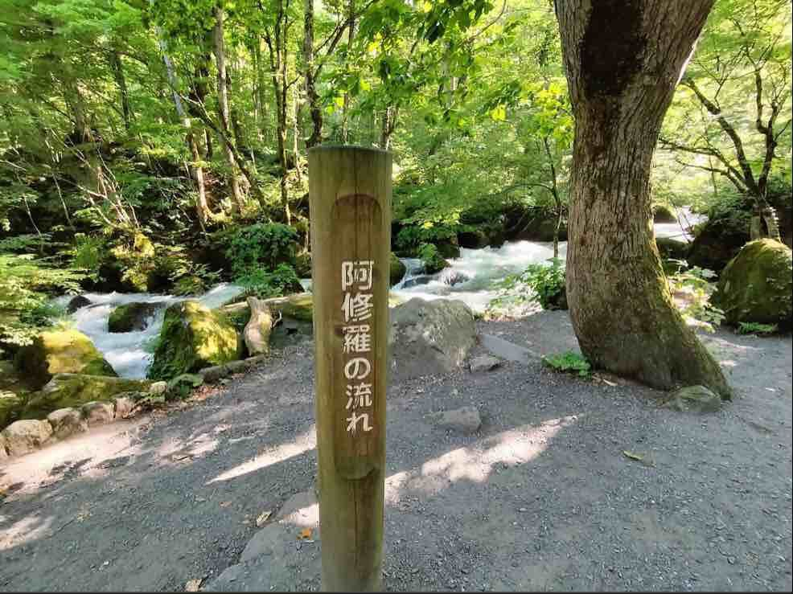

出發倒數計時
00
天
00
小時
00
分鐘
00
秒
青森天氣速覽
--°C
讀取中...
仙台天氣速覽
--°C
讀取中...
八甲田山頂預估
約 --°C
比市區低8-10°C
青森特色
青森縣以其清新的空氣、壯麗的自然風光和優質的農產品而聞名。九月是 蘋果豐收的季節，也是在奧入瀨溪流和八甲田山欣賞初秋景色的最佳時機。
季節體驗
- 奧入瀨溪流: 綠意盎然，溪水潺潺。
- 八甲田山: 9月中旬起，山頂開始出現紅葉。
- 蘋果採摘: 體驗親手採摘新鮮的青森蘋果。
點一下地名可以展開看該地整週的天氣與氣溫。氣象廳僅公布「未來 7 天」的預報，出發前會逐日自動延伸涵蓋此次行程日期，資料是每次開啟本頁時即時向氣象廳抓取，尚未公布的日期會顯示「尚未公布」，等預報公布後重新整理本頁即可自動看到，不需要手動更新。
想看 2 週趨勢？（需手動查看，非自動抓取）
奧入瀨溪流無獨立測站，溪谷天氣可參考： JMA 十和田市 tenki.jp 奧入瀨溪流
八甲田山無獨立測站，山區天氣可參考： JMA 青森市 tenki.jp 纜車站
Windy・風場/颱風動態沿途即時影像
出發前想抓天氣感覺、抵達後想確認現場狀況，都可以點連結看即時畫面。資料來源：Weathernews Live Camera，需手動查看，非自動抓取。
9/8（二）
青森市・A-Factory・睡魔之家
9/10（四）
奧入瀨溪流・十和田湖・八食中心
9/11（五）
盛岡八幡宮・嚴美溪・猊鼻溪
9/13（日）
金蛇水神社・仙台機場
旅遊掠影
這次旅程的精彩瞬間與必訪景點的驚鴻一瞥。
